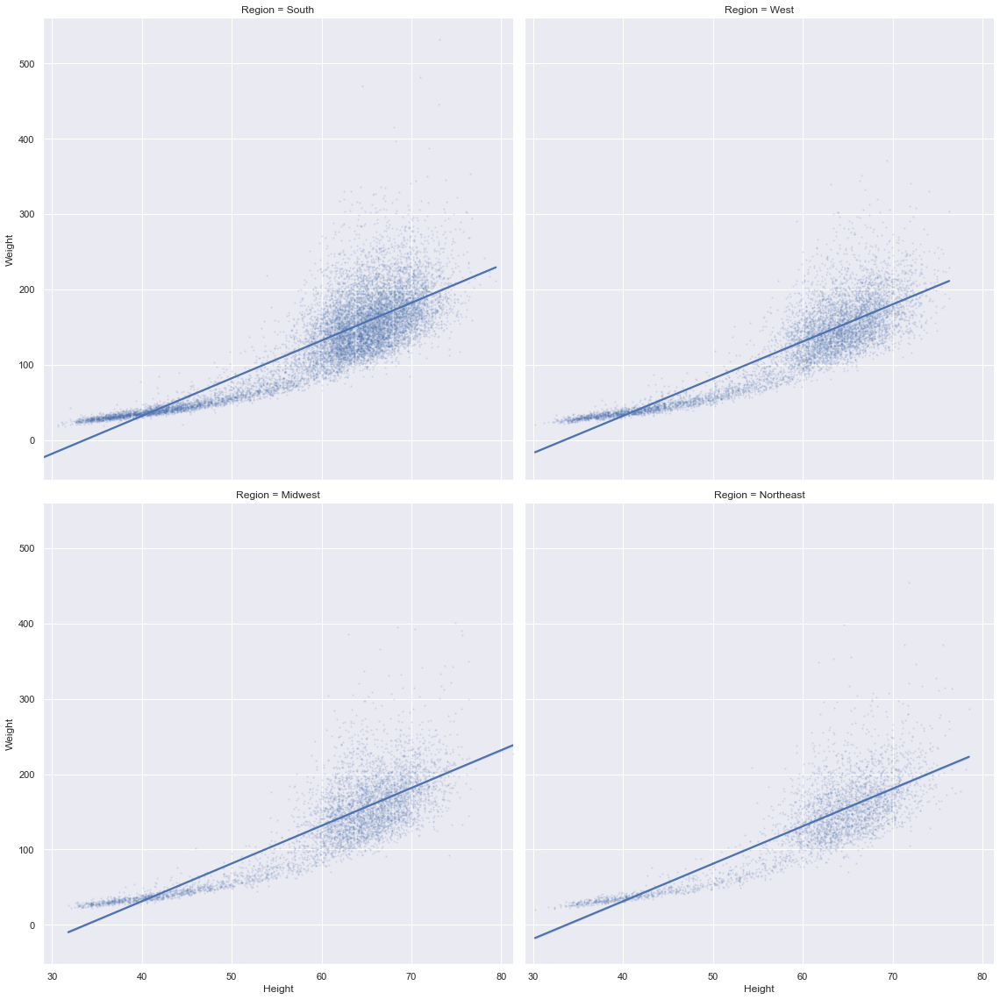
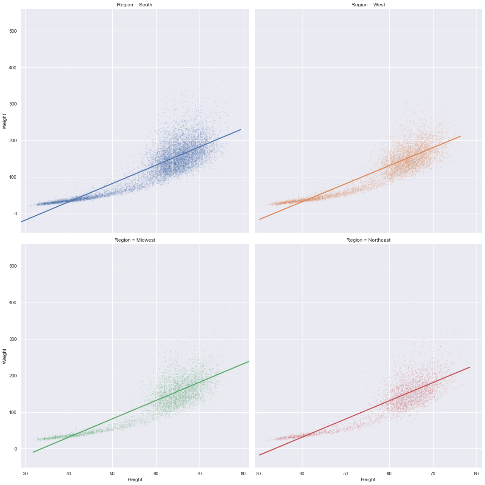
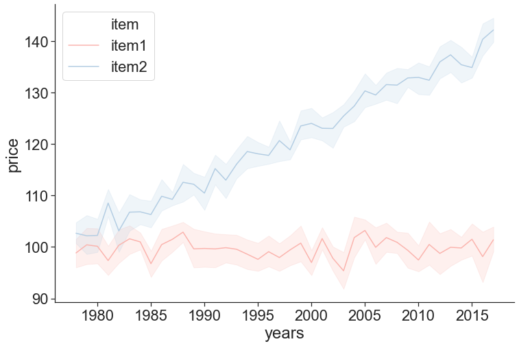

Plotting in Python Using matplotlib and seaborn
Goals of this Lesson
Students will learn:
- How to generate beautiful statistical visualizations in Python using the
seabornpackage
Links to Files and Video Recording
The files for all tutorials can be downloaded from the Columbia Psychology Scientific Computing GitHub page using these instructions. This particular file is located here: /content/tutorials/python/4-plotting/index.ipynb.
For a video recording of this tutorial from the Fall 2020 workshop, please visit the Workshop Recording: Session 3 page.
# load packages we will be using for this lesson
import pandas as pd
import seaborn as sns
import warnings
warnings.filterwarnings('ignore')
sns.set(rc={'figure.figsize':(12,8)})
Load in Sample Data
We’re going to practice here on a dataset from the 1990 NHANES (National Health and Nutrition Examination Survey). The variables are below:
- Region - Geographic region in the USA: Northeast (1), Midwest (2), South (3), and West (4)
- Sex - Biological sex: Male (1), Female (2)
- Age - Age measured in months (we’ll convert this to years below)
- Urban - Residential population density: Metropolital Area (1), Other (2)
- Weight - Weight in pounds
- Height - Height in inches
- BMI - BMI, measured in kg/(m^2)
nhanes = pd.read_csv("NHANES1990.csv")
nhanes.head()
| Region | Sex | Age | Urban | Weight | Height | BMI | |
|---|---|---|---|---|---|---|---|
| 0 | 3 | 2 | 513 | 2 | 171.7 | 65.3 | 28.4 |
| 1 | 4 | 1 | 307 | 2 | 155.2 | 62.3 | 28.2 |
| 2 | 4 | 2 | 886 | 1 | 166.7 | 59.2 | 33.5 |
| 3 | 4 | 1 | 458 | 1 | 224.7 | 71.9 | 30.6 |
| 4 | 2 | 1 | 888 | 2 | 245.0 | 67.7 | 37.6 |
First, let’s clean up the data a little bit:
nhanes['Age'] = nhanes['Age']/12
nhanes['Urban'] = nhanes['Urban'].replace({1:'Metro Area',2:'Non-Metro Area'})
nhanes['Region'] = nhanes['Region'].replace({1:'Northeast',2:'Midwest',3:'South',4:'West'})
nhanes.head()
| Region | Sex | Age | Urban | Weight | Height | BMI | |
|---|---|---|---|---|---|---|---|
| 0 | South | 2 | 42.750000 | Non-Metro Area | 171.7 | 65.3 | 28.4 |
| 1 | West | 1 | 25.583333 | Non-Metro Area | 155.2 | 62.3 | 28.2 |
| 2 | West | 2 | 73.833333 | Metro Area | 166.7 | 59.2 | 33.5 |
| 3 | West | 1 | 38.166667 | Metro Area | 224.7 | 71.9 | 30.6 |
| 4 | Midwest | 1 | 74.000000 | Non-Metro Area | 245.0 | 67.7 | 37.6 |
Scatter Plots
seaborn makes creating attractive and publication-quality data visualizations possible with single line commands. We’ll start with a scatter plot to look at how some of our variables are distributed by using the scatterplot() function.
sns.scatterplot(x="Age",y="Weight",data=nhanes);

We can also easily represent other dimensions of the data on this place using the size of the points. Let’s map that to BMI:
sns.scatterplot(x="Age",y="Weight",data=nhanes,size="BMI");

We can even add a fourth dimension to this visualization by mapping the color of the points to a categorial variable. Let’s now use the hue argument to represent each point based on whether it is urban or non-urban:
sns.scatterplot(x="Age",y="Weight",data=nhanes,size="BMI",hue="Urban");

There are lots of ways you can vary and customize this visualization using seaborn. The package is very well documented and you can check out references with examples for all functions here: https://seaborn.pydata.org/api.html.
Histograms and Data Distributions
We can use the distplot() function to look at both a histogram and an smoothed estimate of the data distribution.
sns.distplot(nhanes["Weight"]);

If we want to look at only a histogram, we can just set the kde argument to False:
sns.distplot(nhanes["Weight"],kde=False);

Jointplots
seaborn also has some quick ways to combine both the univariate histogram/density plots and scatter plots from above using jointplot(). By default, this fucntion will plot a scatter plot and a histogram for two continuous x and y variables:
sns.jointplot(x="Age",y="Weight",data=nhanes);

We can also modify it to plot density estimates using the kind keyword:
sns.jointplot(x="Age",y="Weight",data=nhanes,kind="kde");

Categorical Plots
The plot types above are great for visualizing continuous x continuous data, but there are better ways to look at continuous x categorical data. For example, what if we want to look at the distribution of weights by region?
One way of doing this is by using the catplot() function. By default, this function will plot each data point grouped by our categorical variable with some jittering to help us differentiate points:
sns.catplot(x="Urban",y="Weight",data=nhanes,height=10);

It’s kind of hard to see how the data is distributed because it is so dense, so let’s change the size of the points using the s argument as well as the alpha value of each point to help with this:
sns.catplot(x="Urban",y="Weight",data=nhanes,height=10,s=2,alpha=0.2);

Categorial summary plots
There’s still a lot of data here, so it might be easier to visualize this distribution using a summary tool. Fortunately, catplot() makes it easy to change the type of plot by using the kind argument. We can change this plot to a traditional box and whisker plot:
sns.catplot(x="Urban",y="Weight",data=nhanes,height=10,kind="box");

…or also more modern variations like a violin plot:
sns.catplot(x="Urban",y="Weight",data=nhanes,height=10,kind="violin");

Now we can really get a sense of how the weight variable is distributed by urban area.
Sometimes, particularly when there are many levels in your categorical variable, it’s a lot easier to plot only the summary without much information about how the data is distributed. We can set kind equal to point in order to do this:
sns.catplot(x="Region",y="Weight",data=nhanes,aspect=2,kind="point",join=False);

Note that seaborn automatically calculates bootstrapped 95% confidence intervals in the representation of uncertainty on this plot.
What if we wanted to put both of these plots on top of each other? seaborn has each of the plot types in catplot() as individual functions (e.g., pointplot() and stripplot()). We can just use both of these functions to plot one on top of the other:
sns.barplot(x="Urban",y="Weight",data=nhanes)
sns.stripplot(x="Urban",y="Weight",data=nhanes,s=2,alpha=0.2);

Fitting Linear Models to the Data
Let’s say we think there might be a linear relationship between height and weight. We can use the lmplot() function to fit and visualize a line. By default, seaborn will use a 95% confidence interval on this line.
sns.lmplot(x="Height",y="Weight",data=nhanes,height=8,scatter_kws={'s':2,'alpha':0.1});

This model looks like it’s extending a bit far beyond our actual data points. If we want to constrain the fit to only the the boundaries of our data, we can use the truncate argument:
sns.lmplot(x="Height",y="Weight",data=nhanes,height=8,scatter_kws={'s':2,'alpha':0.1},
truncate=True);

We might also want to break this relationship out by one of our categorical variables. We can do this by using either the col or row arguments:
sns.lmplot(x="Height",y="Weight",data=nhanes,height=8,scatter_kws={'s':2,'alpha':0.1},
truncate=True,col="Region",col_wrap=2);

We can further differentiate by color as well:
sns.lmplot(x="Height",y="Weight",data=nhanes,height=8,scatter_kws={'s':2,'alpha':0.1},
truncate=True,col="Region",col_wrap=2,hue="Region");

We can also combine col with row to represent both of our categorical variables:
sns.lmplot(x="Height",y="Weight",data=nhanes,height=8,scatter_kws={'s':2,'alpha':0.1},
truncate=True,col="Urban",row="Region",hue="Region");

Style
You might want to change the default style of plots. seaborn makes it easy to set style preferences for all of the plots in your notebook or script using the set function.
help(sns.set)
Help on function set in module seaborn.rcmod:
set(context='notebook', style='darkgrid', palette='deep', font='sans-serif', font_scale=1, color_codes=True, rc=None)
Set aesthetic parameters in one step.
Each set of parameters can be set directly or temporarily, see the
referenced functions below for more information.
Parameters
----------
context : string or dict
Plotting context parameters, see :func:`plotting_context`
style : string or dict
Axes style parameters, see :func:`axes_style`
palette : string or sequence
Color palette, see :func:`color_palette`
font : string
Font family, see matplotlib font manager.
font_scale : float, optional
Separate scaling factor to independently scale the size of the
font elements.
color_codes : bool
If ``True`` and ``palette`` is a seaborn palette, remap the shorthand
color codes (e.g. "b", "g", "r", etc.) to the colors from this palette.
rc : dict or None
Dictionary of rc parameter mappings to override the above.
sns.set(style="whitegrid",font="Arial",palette="Set1",font_scale=2)
sns.scatterplot(x="Height",y="Weight",hue="Urban",data=nhanes);

sns.set(style="dark",palette="Set2")
sns.scatterplot(x="Height",y="Weight",hue="Urban",data=nhanes);

Personally, I like to use the ticks style, and the Arial font, but there are many options you can choose from. You can also use the despine() function to remove borders from the plot
sns.set(style="ticks",font="Arial",palette="Pastel1",font_scale=2)
sns.scatterplot(x="Height",y="Weight",hue="Urban",data=nhanes);
sns.despine();

Titles and Labels
In order to add a title and create more informative labels, we need to save the plot as an object using the = operator. We can then call the set_{title,ylabel,xlabel}() functions of this object to make the plots clearer.
myPlot = sns.scatterplot(x="Height",y="Weight",hue="Urban",data=nhanes);
myPlot.set_title("Height and Weight by Urban Status")
myPlot.set_ylabel("Weight in pounds")
myPlot.set_xlabel("Height in inches")
sns.despine();

Saving Your Plots
To save your plot as a file, you can access the savefig() function from your plot object:
myPlot.figure.savefig("newPlotTest.pdf")
You can save plots in a variety of formats (like .jpg or .png) but using a vector format like .pdf or .svg is recommended.
Heatmaps
Sometimes a heatmap might be useful to look at the value of one variable based on a 2D grid of two other variables.
This is kind of a silly example, but say we wanted to map out the number of observations in our dataset as a factor of region and neighborhood type:
nhanesGroup = nhanes.groupby(["Region","Urban"]).size().reset_index(name="Observations")
nhanesGroup = nhanesGroup.pivot(index="Region",columns="Urban",values="Observations")
sns.heatmap(nhanesGroup);

Time Series Plot
Let’s make up some data on the prices of two different items from 1978-2017:
import numpy as np
priceData = []
for i in range(10):
years = range(1978,2018)
item1 = np.random.normal(100,5,40)
item2 = range(1,41) + np.random.normal(100,5,40)
priceData.append(pd.DataFrame({'years':years,'item1':item1,'item2':item2}))
priceData = pd.concat(priceData).reset_index()
priceData = pd.melt(priceData,id_vars=['years'],var_name="item",value_vars=['item1','item2'],value_name="price")
priceData.to_csv("priceData.csv")
To save some time, I already generated this data. You can go ahead and load it from a .csv file:
priceData = pd.read_csv("priceData.csv")
The function lineplot() can be used to visualize time series data using seaborn. Its syntax is exactly like plots we’ve used above. In addition, this function automatically calculates 95% confidence intervals around each of our datapoints and displays them as a continuous ribbon around the mean line:
sns.lineplot(x="years",y="price",hue="item",data=priceData)
sns.despine();

Final Points
While seaborn will get you very far, sometimes you might want to do something it doesn’t allow for. Fortunately, seaborn is written on top of a more robust (but less high-level and user friendly) package called matplotlib, which is the backbone behind plotting data in Python. While beyond the scope of this tutorial, you can read more about matplotlib here: https://matplotlib.org/